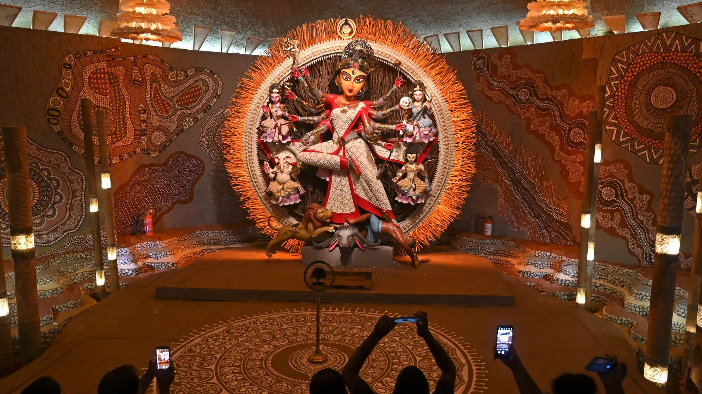
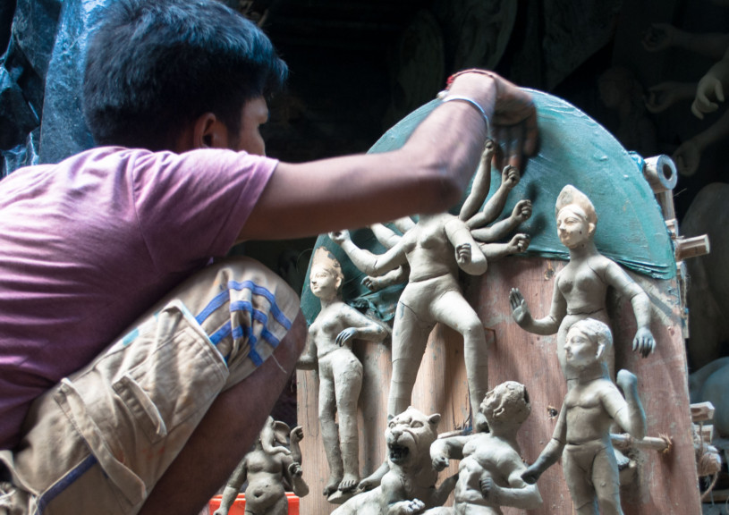
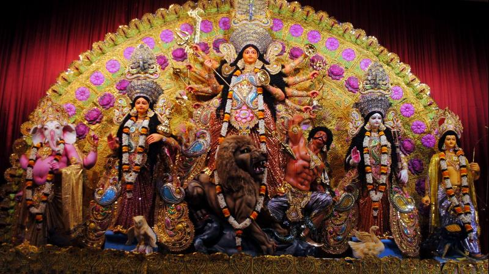
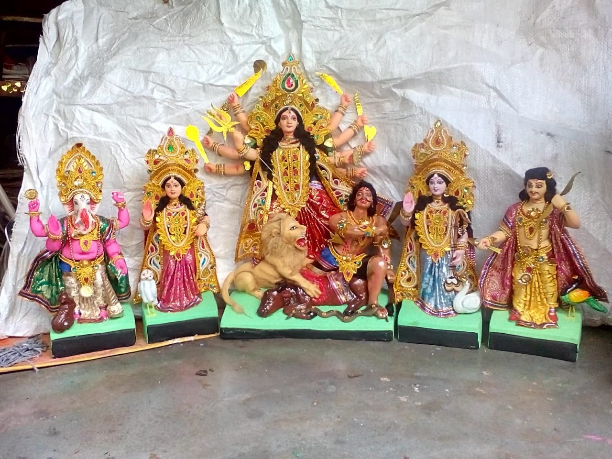
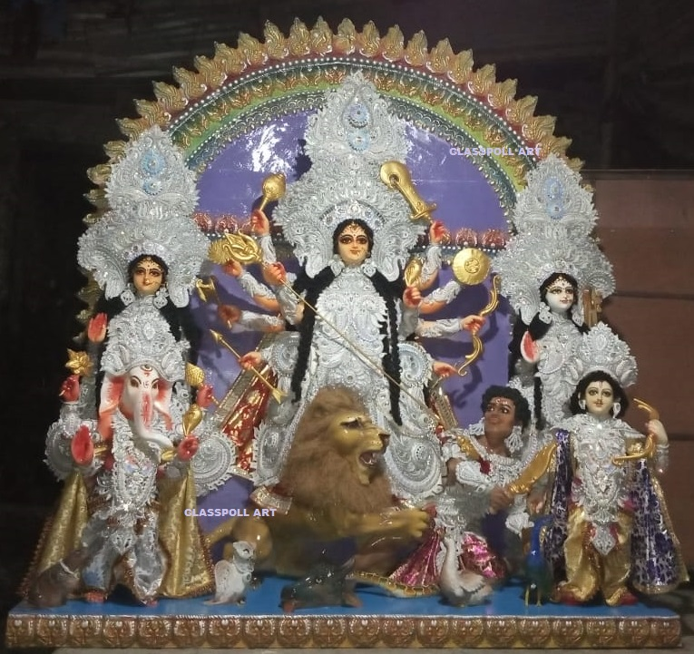

Fiberglass Durga Idol
Why To Choose Fiberglass Durga Idols Made by Glasspoll Art?
Durga Puja is undoubtedly the most glorious festival in West Bengal and for Bengalis. This greatest festival of autumn allows every Bengali to celebrate the triumph of good over evil to its full glory. Every year, Bengalis celebrate Durga puja with glory and full of enjoyment.
We celebrate the occasion mainly from Mahapanchami to Dashami. Dashami is also known as a Dussehra. The last day is called Bijaya Dashami as because this day the idol is submitted in water to wait for the next year. This is the Bengali ritual and this is happening since ancient days.
Fiberglass Durga Idols are quite popular nowadays for all those people who admire this festival. People, who live outside of West Bengal, always prefer such products for its high-quality and lightweight materials. The biggest advantage of using Fiberglass wall panel is the statues are eco-friendly. Most importantly it does not cause harm to the nature or environment.
Now most of the people are decorating their wall with these elegant Durga wall panel. Today most of the architects and home builders prefer Fiberglass wall panel for its unmatched attributes like beauty and strength.
If you are in among those people who look for lightweight products to decorate your home, Fiberglass Durga idol would be the smartest choice. These panels consist of extremely high quality and lightweight that enhances the beauty of your wall as well as house. The creators and artists always mold the materials into different shapes to design the idols. The materials are easy for crafting intricate details for idols.
Glasspoll Art is one of the leading and renowned exporters of Durga wall panels. They have more than 15+ years of experience in this profession. They have the expertise of creating Fiberglass Statues, Sculptures, Planters with 100% success rates and always maintain customer satisfaction. At the same time, they have been exporting Hindu Goddess to overseas places like USA, Canada, Australia and Singapore over last couple of years at affordable rates.

0-N
The True Essence of Durga Puja:
Durga Puja is just not only a festival, it’s a heartfelt emotion for all Bengalis who live in abroad. It doesn’t matter; if a Bengali lives in UK, USA or North America, Bengalis all over the world celebrate Durga Puja from Mahapanchami to Bijoya Dashami with full gratification.
Most of the people don’t know that Bengalis who stay in Papua New Guinea or Nigeria celebrate Durga puja and enjoy the festival. It’s a matter of togetherness and just 2-3 families who always get together, arrange everything and celebrate this festival. This is the actual charm of Bengalis and true essence of Durga Puja.
For those people who stay out of the country around this time, the four days of Durga Puja encompass everything from festivity and celebration of food, friends, and enjoyment. Bengalis from India, America, Canada and Bangladesh all get connected on this holy festival only.
Durga Idol: A Symbol of Worship and Strength
Devi Durga is considered as the feminine epitome of strength. She is depicted in variety of Vedic manuscript as a goddess having feminine prowess, power, determination, wisdom and punishment. She has been glorified in various shastras like Devi Bhagwat Purana. She is considered as a divine potency responsible for keeping this material world in order and decorum. Those who seek prosperity in this material world in terms of material powers and wealth, also ardently worship her.
The expression on Ma Durga’s face evokes a sense of love and devotion towards the Goddess and her children. The Supreme shakti, Maa Durga is worshiped with utmost devotion in Hindu religion. She is divine with a multi-dimensional demeanour. She is not only a nurturer but also a protector. She is worshipped as the Goddess of Strength.
Fiberglass Durga Statues- Well Admired By Bengalis:
Most of the Bengalis who stay abroad decorate their house wall with beautiful Durga wall panel, to keep the remembrance of this holy festival. If you are living out of the country, thousands miles from your home, staying apart from your loved ones, probably a Durga idol is the best thing that can lighten up your home. It is for sure that your neighbors and friends will positively appreciate your decision with the wall decoration. Today most of the architects and home builders are choosing Fiberglass wall panel because of its unmatched attributes like beauty and strength.
Why Choose Fiberglass Items?
Fiberglass has revolutionized the world of sculpture and idol making. It is a well-known material in recent days for the décor and for puja purpose at, home, and communities. This special material allows finer rendering of sculptures and statues. Fiberglass idols have become very popular that people consider the same for the puja purpose in different countries nowadays.
Nevertheless, Fiberglass Durga Statues are often considered a great alternative for wall decoration that is made with clay and shola. People who live abroad always prefer such products for its high-quality and lightweight materials. The biggest advantage of using Fiberglass wall panel is the statues are eco-friendly. Most importantly it does not cause harm to the nature or environment.mm

Navaratri Durga Idol
Navadurga which literally means the nine forms of Goddess Durga. The goddess symbolizes the nine forms adi-shakti Durga. During Navratri, we awaken the energy aspect of Godhead in the personification of the universal mother Goddess Durga. Navratri, nine nights considered to be very auspicious to worship the nine planets and nine divinities.
The names of 9 forms of Maa Durga are Shailputri,
Brahmacharini, Chandraghanta, Kushmanda, Skandamata, Katyayini, Kaalratri,
Mahagauri and Siddhidhatri. They are together worshipped during the Navrātri
Vrata (Nine Divine Nights).
Each goddess has a different form and a special significance. Nava Durga, if worshipped with religious fervor during Navaratri, it is believed, to bestow spiritual fulfillment. Nava also means ‘nine’ – it denotes the number to which sages attach special significance.
1st form of NavaDurga
- Shailputri Devi
Shailputri is the first form of NavaDurga; and is also known as Bhavani, Parvati or Hemavati. She is known to be the earthly essence. Maa Shailputri is the major and the absolute form of the Goddess. Since she was the wife to Lord Shiva and is known as Parvati. She took birth as the daughter of Lord Himalaya; due to which she is named as Shailputri – the daughter of mountains.
2nd form - Brahmacharini
Goddess Parvati took birth at the home of Daksha Prajapati in the form of the great Sati. Her unmarried form is worshipped as the 2nd form of NavaDuga - Goddess Brahmacharini. She signifies as the lady; who practiced the toughest penance and hard austerity.
3rd Form -
Chandraghanta
Chandraghanta Devi is called the Goddess of spiritual and internal power. People who have unnecessary enemies and severe obstacles in life should worship the Goddess to set themselves free. Goddess Parvati is the wife to the almighty Lord Shiva.
4th Form - Kushmanda
Goddess Kushmanda is the fourth form of the NavaDurga is worshipped on the fourth day of Navratri. Ku means little, Ushma means energy and Anda means cosmic egg. Here the whole universe is represented as a cosmic egg and the Devi is believed to end the darkness with her divine smile.
5th form - Skandamata
When Goddess Parvati became the mother of Lord Kartikeya (Lord Skanda), she came to be known as Skandamata. The 5th day of Navratri is dedicated to the worship of the fifth form of NavaDurga - Skandamata.
6th Form - Katyayani
On the havoc created by Mahisasur, Goddess Parvati had taken the avatar of Goddess Katyayani, the 6th form of NavaDurga. She is also referred to as the warrior Goddess. Certain religious texts state that Goddess Pravati was born at the home of sage Katya and hence the name Katyayani.
7th Form - Kalaratri
The 7th form of NavaDurga is known as Goddess Kalaratri. She is considered to be the most ferocious avatar of NavaDurga and is known for destroying ignorance and removing darkness from the universe.
8th Form - Mahagauri
Mahagauri is the 8th manifestation of the goddess Durga and amongst the NavaDurga. Mahagauri is worshiped on the 8th day of Navratri. According to Hindu mythology, Goddess Mahagauri has the power to fulfill all the desires of her devotees.
9th Form of NavaDurga
- Siddhidatri
The 9th form of Navadurga is known as Goddess Siddhidhatri. She is the moola Roopa of Maa Parvati. Maa Siddhidhatri has four hands holding a discus, conch shell, trident and mace, sitting on a fully bloomed lotus or a lion. She possesses eight supernatural powers, or the siddhis, called Anima, Mahima, Garima, Laghima, Prapti, Prakambya, Ishitva and Vashitva.
Glasspoll Art is a leading manufacturer and supplier of Fiberglass idols and Fiberglass status in West Bengal, India. They have been creating and exporting NavaDurga Idol, Fiberglass Hindu god statues across USA, Canada, Singapore, and other countries. They always ensure error-free production in every manufacturing stage. They design a wide range of these products using different attractive colors. When it comes to the quality of work, they supply the best quality materials to their customers.
The exporter provides different types of God Statues and Idols to their clients at affordable prices. They have a client list that includes personal buyers and different parts of the world. They also provide shipping of fiberglass Durga idols in overseas market. Each and every product they manufacturer is unique and elegant.
About Author:
The author of this article is a professional content writer having long years of experience. He has written many articles and blogs on Durga Idol, Fiberglass Hindu god statues, Sculptures and Planters.
Read More →
Revolutionizing Tradition: The Journey from Clay to Fiberglass Durga Idols
Durga Puja, the grand festival celebrating the triumph of good over evil, holds a special place in the hearts of Bengalis, and no other city captures the essence of this celebration quite like Kolkata. The capital of West Bengal transforms into a cultural kaleidoscope during the puja season, adorned with lights, colors, and the spirit of festivity. Central to this celebration is the creation of the iconic Durga idol, a masterpiece that embodies the rich cultural heritage of Kolkata and the Bengali community.
The Pomp and Grandeur of Kolkata's Durga Puja
Kolkata's Durga Puja is not merely a religious event; it is a cultural extravaganza that engulfs the entire city in a festive fervor. The streets come alive with vibrant decorations, mesmerizing light displays, and the rhythmic beats of traditional dhak drums. Pandals, elaborately themed temporary structures housing the Durga idols, compete for attention with their innovative designs and artistic brilliance.
The artistic and cultural heritage of Kolkata finds expression in every aspect of Durga Puja. From the mesmerizing sound of conch shells announcing the arrival of the goddess to the aroma of traditional Bengali sweets wafting through the air, the celebration engages all the senses. Families and communities come together, reflecting the communal spirit that defines Bengali culture.
The Making of Durga Idol: A Fusion of Art and Devotion
At the heart of Kolkata's Durga Puja is the creation of the Durga idol, a process that blends traditional craftsmanship with artistic innovation. Skilled artisans, often belonging to generations of idol makers, meticulously sculpt the goddess and her entourage from clay sourced from the Hooghly River. The process is not merely a craft; it is a sacred ritual that involves chanting of mantras and invoking the divine spirit into the idol.

The Durga idol in Kolkata is a symbol of artistic excellence. Artisans infuse life into the clay, bringing forth intricate details that reflect the goddess's strength and beauty. The eyes of the idol, known as "Chokkhudaan," are a moment of profound significance, as they are believed to hold the divine gaze that safeguards the devotees.
Bengali Traditions and
Rituals During Durga Puja
Durga Puja in Kolkata is not just about grand processions and artistic creations; it is deeply rooted in Bengali traditions and rituals. From the Anjali, where devotees offer prayers and flowers to the goddess, to the Dhunuchi dance, a traditional dance with a smoking clay lamp, each ritual adds a layer of cultural richness to the celebration.

Kolkata's Durga Puja is a testament to the indomitable spirit of the Bengali & Hindu people, celebrating their cultural identity, devotion, and artistic brilliance. The Durga idol, standing tall amidst the vibrant festivities, encapsulates the fusion of tradition and modernity, a symbol of resilience and unity that defines the soul of Kolkata's Durga Puja. In this city of joy, the celebration of Durga Puja is not just an event but a living, breathing expression of the collective heartbeat of a community that takes pride in its rich cultural tapestry.
Durga Puja: A Historical and Cultural Tapestry
Durga Puja finds its roots in ancient Hindu mythology, specifically in the tale of the battle between the goddess Durga and the demon Mahishasura. The festival celebrates the victory of good over evil and is marked by fervent devotion and elaborate rituals. Over the centuries, Durga Puja has evolved into a cultural extravaganza, combining religious traditions with artistic expression.
The festival typically spans ten days, with preparations beginning months in advance. The heart of the celebration lies in the creation and worship of Durga idols. Traditionally, these idols are crafted from clay, symbolizing the connection between the divine and the earthly realm. The meticulous process involves skilled artisans shaping the goddess and her entourage, infusing life and devotion into every detail.
Durga Puja, the grand festival celebrated with immense fervor and devotion, is synonymous with the creation of intricate and divine idols of the goddess Durga. Traditionally crafted from clay, these idols have been the heart of the festivities for centuries. However, with the advent of new materials, particularly fiberglass, the landscape of Durga idol making has witnessed a transformative shift. In this comparative analysis, we will delve into the characteristics, advantages, and considerations associated with clay idols, fiberglass Durga idols, and other materials, exploring the impact of these choices on the cultural and artistic aspects of Durga Puja celebrations.
1. Clay Durga Idols: Embracing Tradition
Clay has been the primary material for crafting Durga idols since the inception of the festival. This traditional approach symbolizes the connection between the divine and the earthly, emphasizing the transient nature of life. The process involves skilled artisans molding the idols with locally sourced clay, infusing life and devotion into every detail.

Characteristics:
• Cultural Significance: Clay idols maintain a deep cultural and religious significance, resonating with the historical roots of Durga Puja.
• Biodegradability: Traditional clay idols are environmentally friendly as they are made from natural materials and are biodegradable.
• Artistic Craftsmanship: The craftsmanship involved in molding clay idols is considered an art form, with artisans passing down their skills through generations.
Considerations:
• Fragility: Clay idols are more susceptible to damage, especially during transportation and exposure to the elements.
• Environmental Impact: While the clay itself is eco-friendly, concerns arise when large-scale idol immersion occurs in bodies of water, impacting aquatic ecosystems.
To buy clay idols you can visit: https://kumartuliidolmaker.com/home.html
2. Fiberglass Durga Idols: Innovating Tradition

To buy fiberglass Durga idol you can visit: https://glasspollart.com/product-category/durga-idols
3. Other Materials in Durga Idol Making

7 Expert Tips for Choosing the Perfect Fiberglass Durga Idol
Durga Puja is not just a festival—it's a deep spiritual and cultural expression of devotion, art, and tradition. In recent years, fiberglass Durga idols have grown in popularity due to their lightweight nature, durability, artistic detailing, and eco-friendliness. But with so many options available, how do you choose the right one?
Here are 7 expert tips to help you select the perfect fiberglass Durga idol for your celebration, whether you’re organizing a community pandal or looking for a home puja setup.
1. Focus on Proportions and Iconography
The beauty of a Durga idol lies in its symbolic precision. Make sure the idol follows traditional iconographic guidelines—ten arms holding symbolic weapons, the lion (her vehicle), and Mahishasura under her feet. Proportions should be balanced to reflect serenity and power.
Expert Tip: Ask the artisan if the design is based on shastric references or classical iconography to ensure spiritual authenticity.
2. Inspect the Quality of Fiberglass Material
Not all fiberglass is created equal. High-quality fiberglass should be strong, crack-resistant, weatherproof, and capable of holding detailed paintwork. Low-grade fiberglass may deteriorate over time or show uneven surfaces.
Expert Tip: Always check for smooth finishes, fine edges, and structural stability. At Glasspoll Art, we use premium-grade fiberglass built to last for years.
3. Choose the Right Size for Your Space
Whether you’re setting up at home or in a large community pandal, size matters. Oversized idols in small spaces can feel cramped, while small idols may get lost in large venues. Measure your space carefully and plan around height, width, and depth.
Expert Tip: Allow room around the idol for decor, lighting, and rituals like aarti or sindoor khela.
4. Look for Artistic Detailing
The charm of fiberglass idols lies in the precision of artistry. Look for sharp facial expressions, intricate jewelry, fine hair textures, and realistic posture. A well-made idol should exude grace, strength, and divinity.
Expert Tip: Compare hand-painted idols vs. spray-painted ones—hand-painted versions offer more depth and uniqueness.
5. Prioritize Lightweight Design for Easy Handling
One of the biggest advantages of fiberglass idols is their portability. Unlike clay or metal idols, fiberglass is significantly lighter, making it easier to transport, install, and immerse.
Expert Tip: If you're in charge of pandal logistics, choose a fiberglass idol that fits elevator/stair dimensions for easy access and transport.
6. Go for Eco-Friendly Finishing
Today’s devotees are environmentally conscious. Make sure the paints and finishes used are non-toxic and lead-free. Many fiberglass idols can be reused for multiple years, reducing the environmental impact of immersion.
Expert Tip: Ask if the idol has PU coating or UV protection—this ensures a longer life and better resistance to humidity and sunlight.
7. Buy from Trusted Artists or Studios
Choosing a well-established studio ensures both quality and accountability. Look for artists or companies with experience, portfolio variety, and client testimonials. Many reputed artists also offer custom designs and pan-India delivery.
Expert Tip: Visit the studio (if possible) or request close-up photos or videos before confirming your order. A reputable studio like Glasspoll Art provides full transparency and customization support.
A Durga idol isn’t just a decorative piece—it’s a sacred centerpiece of your puja. By following these expert tips, you ensure that your fiberglass Durga idol reflects both aesthetic excellence and spiritual power. With the right choice, your celebration becomes more meaningful and memorable.
If you’re searching for artistically crafted, durable, and eco-friendly fiberglass Durga idols, Glasspoll Art is here to help. Our team of skilled artisans creates custom designs that blend tradition with innovation, perfect for home or community use.
Read More →
A Complete Buyer’s Guide to Fiberglass Durga Idols
Durga Puja is more than a festival—it’s a celebration of devotion, artistry, and cultural heritage. Traditionally, idols of Maa Durga were crafted from clay, symbolizing a return to nature. However, with evolving needs, fiberglass Durga idols have emerged as a modern, practical, and visually stunning alternative.
This comprehensive buyer’s guide will help you understand everything you need to know before purchasing a fiberglass Durga idol—from benefits and design options to pricing factors and maintenance tips.
What is a Fiberglass Durga Idol?
Fiberglass Durga idols are made using fiber-reinforced plastic (FRP), a material composed of glass fibers and resin. This combination creates a structure that is strong, lightweight, and highly durable.
Unlike traditional clay idols, fiberglass idols are designed for long-term use and can be reused for multiple festivals without damage.
Why Choose Fiberglass Durga Idols?
1. Exceptional Durability
Fiberglass idols are known for their strength and resistance to cracking, moisture, and environmental damage.
They can withstand humidity, rain, and temperature changes—making them ideal for both indoor and outdoor installations.
2. Lightweight & Easy Handling
Despite being strong, fiberglass idols are significantly lighter than clay or marble idols.
This makes transportation, installation, and storage much easier.
3. Reusable for Years
One of the biggest advantages is longevity. These idols can be reused year after year, making them cost-effective in the long run.
4. Fine Detailing & Aesthetic Appeal
Fiberglass allows artisans to create intricate designs, expressive faces, and detailed ornaments with high precision.
5. Weather & Pest Resistance
Fiberglass idols are waterproof, termite-proof, and resistant to fungus, ensuring minimal maintenance.
Fiberglass vs Traditional Clay Idols
| Feature | Fiberglass Idol | Clay Idol |
|---|---|---|
| Durability | Long-lasting | Fragile |
| Weight | Lightweight | Heavy |
| Reusability | Yes | No |
| Weather Resistance | High | Low |
| Environmental Impact | Non-biodegradable | Eco-friendly |
While clay idols hold traditional and environmental value, fiberglass idols offer unmatched practicality and durability for modern users.
Types of Fiberglass Durga Idols
1. Small Idols (Home Use)- Ideal for home temples or apartments
- Easy to handle and store
- Usually 1–3 feet in height
2. Medium Idols (Community Puja)
- Suitable for housing societies or small pandals
- Balanced in size and detailing
3. Large Idols (Public Celebrations)
- Designed for grand Durga Puja pandals
- Highly detailed and visually impactful
4. Customized Idols
- Tailor-made designs based on theme, posture, and decoration
- Perfect for unique or themed pujas
Key Factors to Consider Before Buying
1. Size & Space
Measure your available space before purchasing. Large idols require proper installation and support.
2. Design & Style
Choose from traditional Bengali styles or modern artistic interpretations depending on your theme.
3. Quality of Material
Ensure the idol is made from high-grade fiberglass and resin for durability and finish.
4. Artisan Craftsmanship
Look for skilled artisans (especially from regions like Kumartuli) known for intricate detailing.
5. Budget
Prices vary based on:
- Size
- Detailing
- Customization
- Transportation
6. Purpose
- Home worship → Smaller idols
- Community puja → Medium to large idols
- Permanent installation → High-quality, durable models
Pricing Guide for Fiberglass Durga Idols
Although prices vary widely, here’s a rough estimate:
- Small idols: ₹5,000 – ₹25,000
- Medium idols: ₹25,000 – ₹1,00,000
- Large/custom idols: ₹1,00,000+
Custom designs and intricate detailing can significantly increase costs.
Maintenance Tips
One of the biggest advantages of fiberglass idols is low maintenance. Here’s how to keep them in perfect condition:
- Clean regularly with a soft cloth
- Avoid harsh chemicals
- Store in a dry place when not in use
- Use protective covers during transport
Fiberglass idols are washable and resistant to dust and moisture, making upkeep simple.
Are Fiberglass Durga Idols Eco-Friendly?
This is a commonly asked question. While fiberglass idols are not biodegradable like clay, they offer reusability, which reduces annual waste.
Instead of immersing idols every year, many devotees now choose to preserve and reuse fiberglass idols—making them a more sustainable option in the long term.
Where to Buy Fiberglass Durga Idols
You can purchase fiberglass Durga idols from:
- Local artisans and idol makers
- Kumartuli (Kolkata) workshops
- Online platforms and exporters
- Specialized studios like Glasspoll Art
Always verify:
- Customer reviews
- Material quality
- Delivery options
Fiberglass Durga idols represent a perfect blend of tradition and modern innovation. They offer durability, artistic excellence, and long-term value—making them an ideal choice for today’s devotees.
Whether you’re planning a grand Durga Puja celebration or setting up a home temple, investing in a fiberglass Durga idol ensures that your devotion is preserved beautifully for years to come.
Read More →Categories
Popular Posts
Durga Puja is more than a festival—it’s a celebration of devotion, artistry, and cultural heritage. Traditionally, idols of Maa Durga were crafted from clay, symbolizing a return to nature. Howeve
Read More →
The holiday season is all about creating magical, memorable experiences. From twinkling lights to grand Christmas trees, festive décor has the power to transform ordinary spaces into enchanting wonde

Read More →
When the holiday season arrives, decorations transform ordinary spaces into magical experiences. Among the most iconic symbols of Christmas charm and tradition stands the nutcracker. While traditional

Read More →
Durga Puja is not just a festival—it's a deep spiritual and cultural expression of devotion, art, and tradition. In recent years, fiberglass Durga idols have grown in popularity due to their lightwe
Read More →
Fiberglass sculptures are not just decorative pieces—they are a blend of artistry, craftsmanship, and precision engineering. At Glasspoll Art, we take immense pride in delivering high-quality, dur

Read More →
Durga Puja, one of the most celebrated festivals in India, is a time of devotion, cultural vibrancy, and artistic splendor. At the heart of these celebrations are the magnificent Durga idols, which sy

Read More →
Durga Puja, the grand festival celebrating the triumph of good over evil, holds a special place in the hearts of Bengalis, and no other city captures the essence of this celebration quite like Kolkata
Read More →
Over the last couple of years, Fiber children sculptures are in high demand. These statues are perfect option to décor a place. You can place the statue inside and outside in a children’s park, p

Read More →
The True Essence of Durga Puja:Durga Puja is just not only a festival, it’s a heartfelt emotion for all Bengalis who live in abroad. It doesn’t matter; if a Bengali lives in UK, USA or North Ameri
Read More →
Why To Choose Fiberglass Durga Idols Made by Glasspoll Art? Durga Puja is undoubtedly the most glorious festival in West Bengal and for Bengalis. This greatest festival of autumn allows every B
Read More →
The Indian Music Industry is truly endowed with some legendary personalities for watch till now Indian songs; music, films are quite popular in the world. There are many personalities time to time wer

Read More →
Without any doubt, adding beautiful wall hanging can define a space in a different way. You can set a mood or colorful vibes to any style of the room. This is what makes the wall hanging unique and be

Read More →
“Ya Kundendu Tusharahara Dhavala Ya Shubhra VastravritaYa Veena Varadanda Manditakara Ya Shveta PadmasanaYa Brahmachyuta Shankara Prabhritibhir Devaih Sada PujitaSa Mam Pattu Saravatee Bhagavatee Ni

Read More →
Human being always believes in the power of art, creativity, and ability to open people’s heart and minds. Public art or creation has the capability to teach us, inspire us, or just to make us smile

Read More →